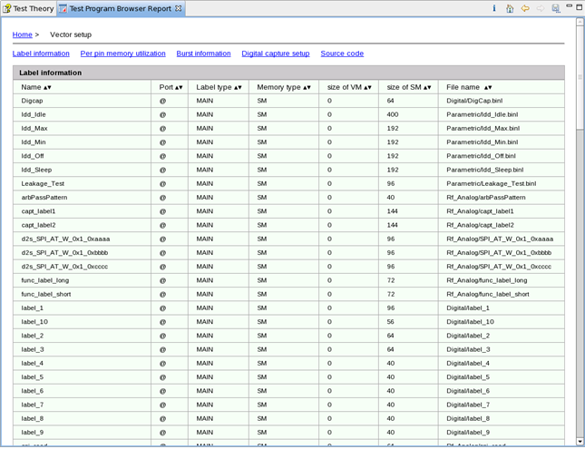

Pattern setup report
On the home page of the Test Program Browser report, click the hyperlink in the Pattern row. The report for vector setups is displayed.
As illustrated in the following screenshot, the hyperlinks above the table provides access to:
- Label information.
- Per pin memory utilization.
- Burst information.
- Digital capture setup.
- Related source codes.
The following screenshot also displays the label information.

Functional changes
- Introduced in SmarTest 7.2.2